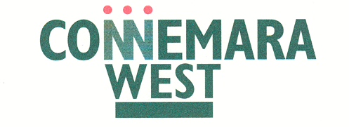
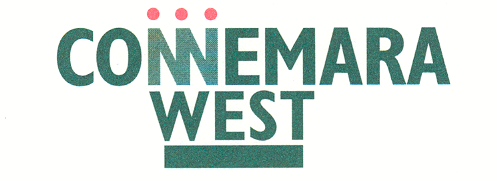

GMIT’s Letterfrack campus is the National Centre for Excellence in Furniture Design and Manufacture. In 2011 the new GMIT Letterfrack Green Campus Committee was established. The members of the committee include people from management, lecturing staff, students and Connemara West. The campus received its first An Taisce Green Flag in 2013 for the work it did in managing and reducing its Waste. Currently it is working on the theme of Biodiversity and on the Community Native Woodland Project. If you wish to find out more about GMIT Letterfrack go to www.gmit.ie/letterfrack